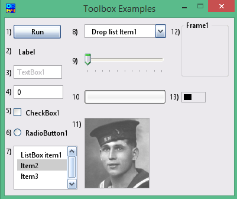

Toolbox Controls introduction
The toolbox in the InForm Designer window contains the most commonly used Windows controls (components). Clicking with the left mouse button inserts a selected control into the preview window.
Toolbox controls
Running UiEditor.exe opens the InForm Designer window. You can create a new form by adding controls from the toolbox to the preview window. Additionally, you can edit their properties, align controls, and adjust their z-ordering.
Below is the component toolbox with corresponding links to each component. An example of each component is displayed in the preview window.
Toolbox:

Toolbox from left to right:
Preview window examples:
Note1: A test example for each toolbox component is provided on a separate page. Please use the links above to select a component description and example page.
Note2: Saving a project in InForm automatically generates a template .bas file. You can add code to this template to create the functionality you require. In the test examples provided by the links above, code added to the templates is indicated by <---.
To manipulate any control
Controls in InForm-PE are manipulated using the Control() array.
For example, to create a progress bar to count the number of downloaded files:
Control(ProgressBar1).Min = 0
Control(ProgressBar1).Max = 12 'Number of files you will be loading 12
To update the progress bar, you would change the .Value property:
Control(ProgressBar1).Value = Control(ProgressBar1).Value + 1
You would use the above code to update the progress bar every time a file is downloaded.
To display these changes, incorporate the code into the subroutine SUB __UI_BeforeUpdateDisplay. For operations like this, you can treat this subroutine as your main program loop.
Note: The SUB __UI_BeforeUpdateDisplay event occurs at approximately 30 frames per second.
For additionl information refer to the following section Properties overview